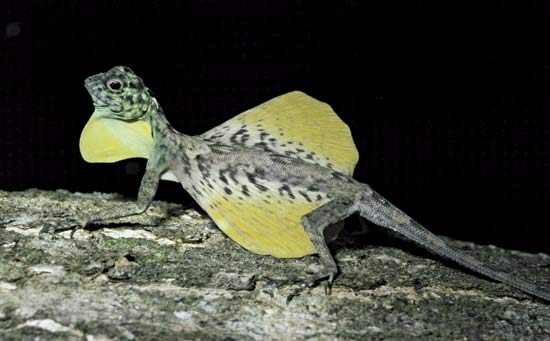
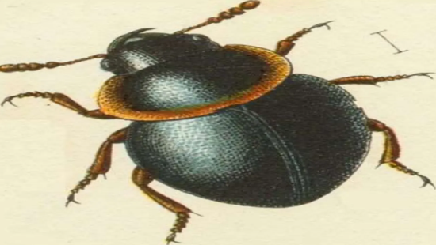
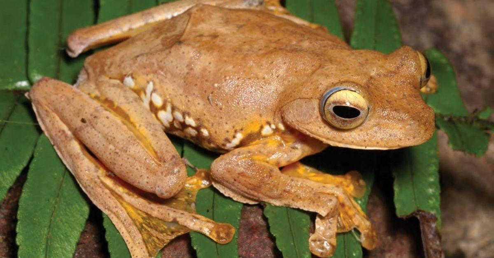
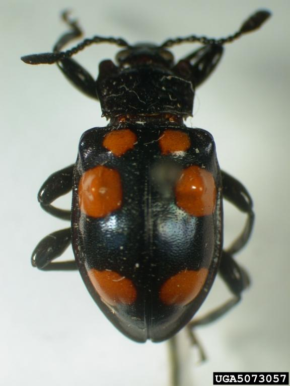

Rizal,
the Scientist
During his years in Dapitan, Rizal developed a fascination for its creatures and meticulously collected an assortment of fauna. He had specimens such as a wild boar's head, a seahorse, a porcupine, scorpions, birds, insects, and fish which were mostly preserved in alcohol.
Aside from the difficulty of gathering the specimens with the help of his students, he had to ship the specimens to Europe as well. He began correspondence with German naturalists Dr. A. Meyer & Dr. K. M. Heller to help study and verify his collections. In the end, he was able to collect 340 shells from 200 different species, which he sold to Dr. Meyer for books.
Among the creatures that Rizal sent, there were some that no one has identified before. Four of these fauna were then named after RIzal: Draco rizali (flying lizard), the Rachophorus rizali (a tree frog), and two beetle species, the Spathomeles rizali (a.k.a. the “handsome fungus beetle”) and the Apogonia rizali (a flying beetle).



